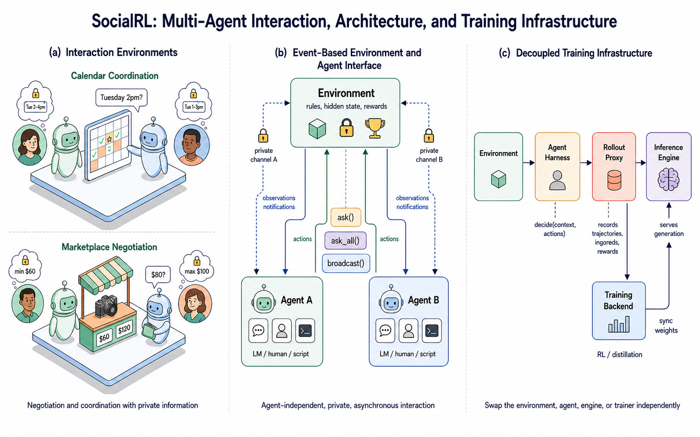
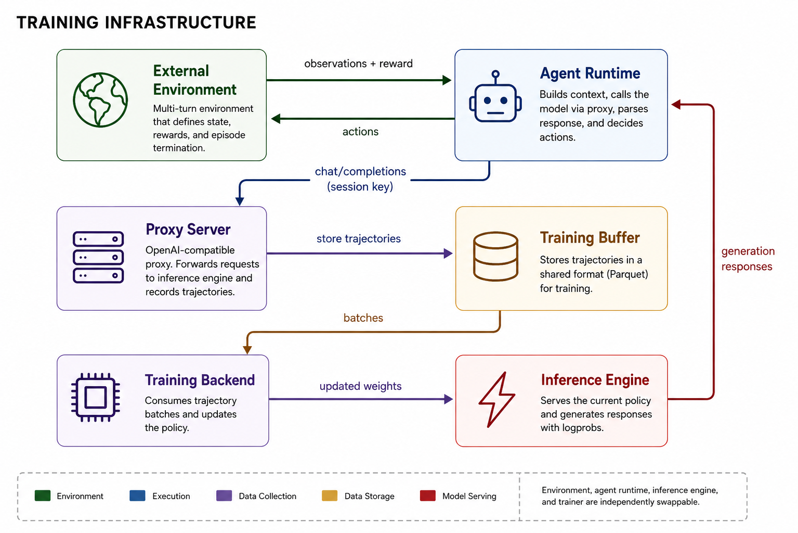

SocialRL: From Passive Delegates to Strategic Negotiators in a 4B Model
TL;DR
- SocialRL (arXiv 2608.13787; Wenyue Hua, Zachary Huang, Tyler Payne, Safoora Yousefi, Saleema Amershi, Asli Celikyilmaz — a Microsoft Research team per the thread) trains social reasoning directly with RL in Qwen3-4B-Instruct-2507 across six principal-driven environments (Deal-or-No-Deal, CaSiNo, Craigslist, Job Interview, Calendar, Marketplace). In-domain specialists match or exceed the GPT-5 family per domain, closing 73–122% of the baseline-to-frontier gap on the negotiation games — visible at the trace level as 78% of buyer openings anchoring below target vs 3% untrained.
- Cross-domain transfer follows game structure (structurally paired games lift each other; a broad multi-issue donor lifts nearly everything; isolated games transfer nothing), and that transfer map is then used to consolidate the specialists via transfer-aware cascade RL and gap-weighted multi-teacher OPD into a single 4B at 0.627 average utility — above GPT-4.1 (0.625), GPT-5.1 (0.619), and GPT-5.2 (0.613).
- An explicit theory-of-mind scaffold (Infer → Act → Anticipate) helps only through training: distilling the ToM traces, not just the actions, lifts utility on every environment; of the two ToM skills, only next-action prediction predicts negotiation outcomes.
Why this matters
The premise is sharp: the dispositions that make an assistant pleasant make it a poor delegate. A friendly frontier model, dropped into a negotiation on your behalf, volunteers your private information unprompted and concedes at the first sign of resistance. As agents increasingly act for users against counterparts with conflicting goals — sellers, recruiters, other users' agents — helpfulness-tuned priors become a systematic liability, and no amount of prompting reliably overrides them (that's an alignment prior, not a knowledge gap).
Methodologically this is RLVR pushed past math and code into a domain people assumed needed either human feedback or frontier scale: multi-turn, partially observable, adversarial interaction. The trick is that these games have enumerable outcome spaces and computable utilities, so the terminal reward is verifiable. And the consolidation story — train six specialists, map which games transfer to which, then order the cascade and weight the OPD mixture using that map — is one of the cleanest worked examples yet of specialist-to-generalist consolidation as an explicit, measured design problem rather than a "mix everything and pray" step.
For this tracker: a 4B out-negotiating GPT-5.2 on held-out scenarios is the compact-model post-training thesis (targeted RL beats general scale on a bounded capability) in unusually legible form.
The core idea
Each environment defines a normalized outcome utility, and reward shaping is difficulty-aware. For multi-issue games (worker/recruiter version shown), the reference point is the egalitarian agreement over the enumerable outcome space:
where \(u_{\mathrm{w}},u_{\mathrm{r}}\in[0,1]\) are each side's private utilities and \(m\) is the role-specific reference. The raw utility \(z\in[0,1]\) is then squashed around that reference with a temperature-sharpened sigmoid, so beating the fair-point yields steep reward:
Price negotiation uses simple clipped surplus splits, e.g. \(r_{\mathrm{buyer}}=\operatorname{clip}\!\big(\tfrac{p_{\max}-p_{\mathrm{deal}}}{p_{\max}-p_{\min}},0,1\big)\).
For consolidation by multi-teacher OPD, prompts are sampled per environment \(e\) by how much of the specialist-to-student gap remains. With gap \(g_e = T_e - B_e\) (specialist minus base score) and closed fraction \(\rho_e^{(t)}\):
with floor \(\lambda=0.05\), minimum-gap threshold \(\delta=0.03\), normalized and band-clamped to \(p_e^{(t)}\in[0.10,0.40]\). Environments whose gap is already closed keep only floor probability; no environment can dominate the mixture.
How it works

Figure 1 from the paper: the six interaction environments (allocation, multi-issue negotiation, price bargaining, scheduling), the event-based agent interface, and the decoupled training stack.
Infrastructure. A stateful environment talks to black-box agents through per-agent asynchronous channels carrying structured observations, notifications, and actions. Training is decoupled: the agent runtime executes independently of the trainer, and a rollout proxy sits between the harness and the inference engine, recording model inputs, outputs, rollout log-probs, and terminal rewards. The same PPO implementation then trains against any environment without the trainer knowing anything about multi-agent orchestration.

Figure 3 from the paper: the rollout proxy pattern — the trainer consumes recorded (input, output, log-prob, reward) tuples rather than instrumenting the agent loop.
Stage 1 — specialists. PPO directly on terminal outcome rewards for Deal-or-No-Deal, CaSiNo, Job Interview, Calendar; for the price-negotiation environments (Craigslist, Marketplace) an SFT warm start first places bargaining behaviors within the policy's support, then PPO optimizes them.
Stage 2 — consolidation. Measure the 6×6 cross-environment transfer matrix, then:
# SocialRL two-stage recipe
Stage 1: for each env e in {DnD, CaSiNo, Craigslist, JobInterview, Calendar, Marketplace}:
policy_e <- Qwen3-4B-Instruct-2507
if e in {Craigslist, Marketplace}: policy_e <- SFT(policy_e) # warm start
policy_e <- PPO(policy_e, env=e, reward=shaped terminal utility)
Measure transfer matrix M[e_train, e_eval] from the specialists.
Stage 2a (cascade RL): order envs so each stage's gains feed the next
Calendar -> CaSiNo -> DnD -> Craigslist -> Marketplace -> JobInterview
train one policy through the sequence with PPO # transfer-aware
Stage 2b (multi-teacher OPD): distill all 6 specialists into one student
at each step t: sample env e ~ p_e(t) (gap-weighted w_e, clamp [0.10,0.40])
student rollouts in env e, per-token reverse KL vs specialist_e
ToM variant: specialists emit Infer -> Act -> Anticipate traces;
distill the full trace, not the action alone.
Theory of mind. The scaffold makes the agent explicitly infer the counterpart's state, act, and anticipate the counterpart's next move. Prompting with it does little; distilling the trace improves every environment and generalizes better across them — and only the next-action-prediction skill correlates with negotiation outcomes.
Results
- Specialists reach the frontier: on held-out scenarios the 4B matches or exceeds GPT-4.1/5.1/5.2 per domain, closing 73–122% of the baseline-to-frontier gap on the negotiation games. Behaviorally, 78% of trained buyer openings anchor below target (vs 3% untrained); qualitative analysis finds more selective concession and less private deliberation leaking into messages.
- Unified model: the transfer-aware cascade reaches 0.627 ± 0.004 Avg-6, vs 0.578 ± 0.008 for random ordering and 0.562 ± 0.010 for an anti-transfer ordering (evaluation: 10 scenarios × 3 opponents × 5 trials = 150 games/environment). MOPD likewise consolidates to the same 0.627 headline. Reference points: GPT-4.1 = 0.625, GPT-5.1 = 0.619, GPT-5.2 = 0.613.
- Ordering matters: cascade RL is explicitly sensitive to environment order — the anti-transfer curriculum loses ~0.065 average utility, which is the transfer-map-as-curriculum claim in one number.
- ToM: trace distillation lifts utility on every environment vs action-only distillation and transfers better across environments.
How it connects
- Dual Nature of Generalization in OPD (this list, distilled today) — that paper's MOPD seesaw (mixture ratio, not domain routing, decides the student's profile) is precisely the failure mode SocialRL's gap-weighted, band-clamped mixture is engineered against; and since all six specialists share the same Qwen3-4B base, this is a same-origin consolidation — the favorable regime by that paper's account. The two read as problem and countermeasure.
- Weak-to-Strong OPD (this list) — both show a small model + targeted post-training displacing frontier teachers; SocialRL adds the RL-first stage and uses OPD only for consolidation.
- Turn-Level Credit Assignment for Multi-Turn RL (this list) — SocialRL gets away with terminal-only rewards plus shaping; the trace-level analyses here (anchoring, concession timing) are exactly the intermediate signals a turn-level credit method would try to exploit.
- Harness-IF (this list) — complementary evidence on the "pleasant priors are sticky" theme: instructions that push against a model's defaults degrade compliance; SocialRL's answer is to move the fix from the prompt into the weights.
Critical take
The frontier comparison deserves a squint. GPT-4.1/5.1/5.2 are evaluated as delegates in games they were never tuned for, with utilities defined by the benchmark suite the authors built — "matches GPT-5.2" really means "beats helpfulness-tuned generalists at bounded games with computable payoffs after training on those games' distributions." Held-out scenarios, yes; held-out game structures, no. The opponent pool is also small (3 opponents per evaluation), so some strategy could be opponent-pool overfitting rather than general social reasoning (inferred from the evaluation protocol — verify opponent identities in the paper). And there's an unavoidable dual-use edge: a recipe that trains a 4B to anchor, withhold private information, and time concessions is also a recipe for manipulative agents; the paper frames it as delegation alignment, but deployment norms for "strategic" agents interacting with humans are nowhere near settled. None of that diminishes the two durable findings: verifiable-utility games extend RLVR to social capability, and transfer-map-guided consolidation (cascade order + gap-weighted MOPD) is a reusable pattern well beyond negotiation.
If you remember three things
- Helpful-assistant priors make bad delegates, and SocialRL fixes this in the weights: PPO on shaped, verifiable terminal utilities takes a 4B to GPT-5-family level per social domain (73–122% of the gap closed).
- Consolidation is a design problem with a map: measure cross-game transfer, order the cascade with it (0.627 vs 0.562 for the anti-order), and weight the MOPD mixture by remaining gap with a [0.10, 0.40] clamp.
- Theory-of-mind scaffolds pay only when distilled as traces — and next-action prediction, not state inference, is the ToM skill that tracks outcomes.